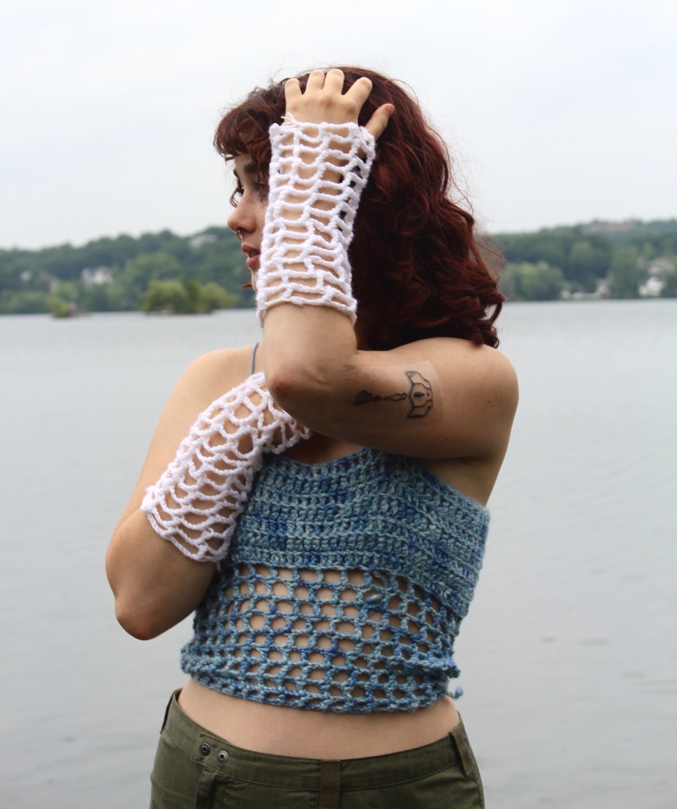
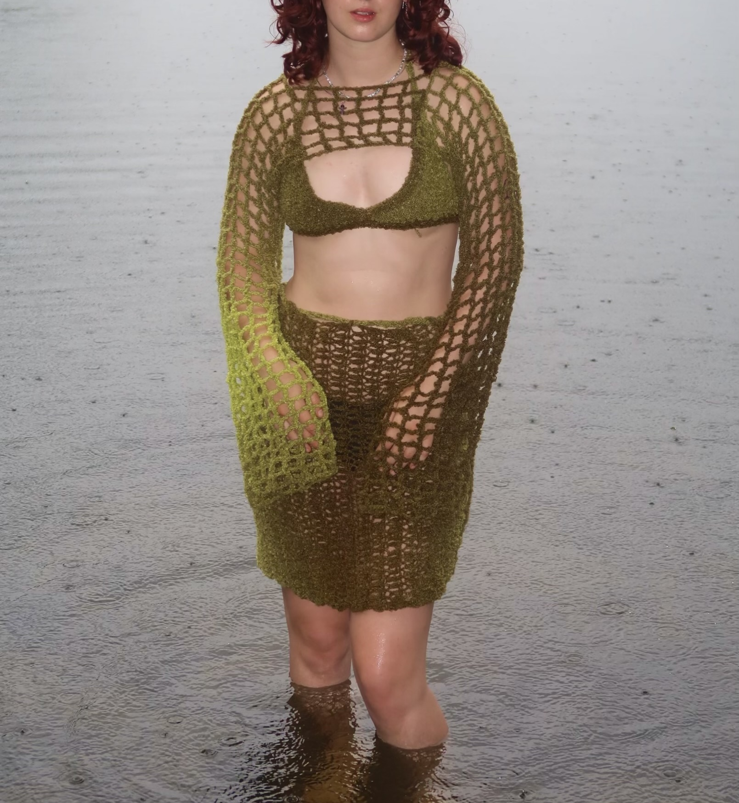
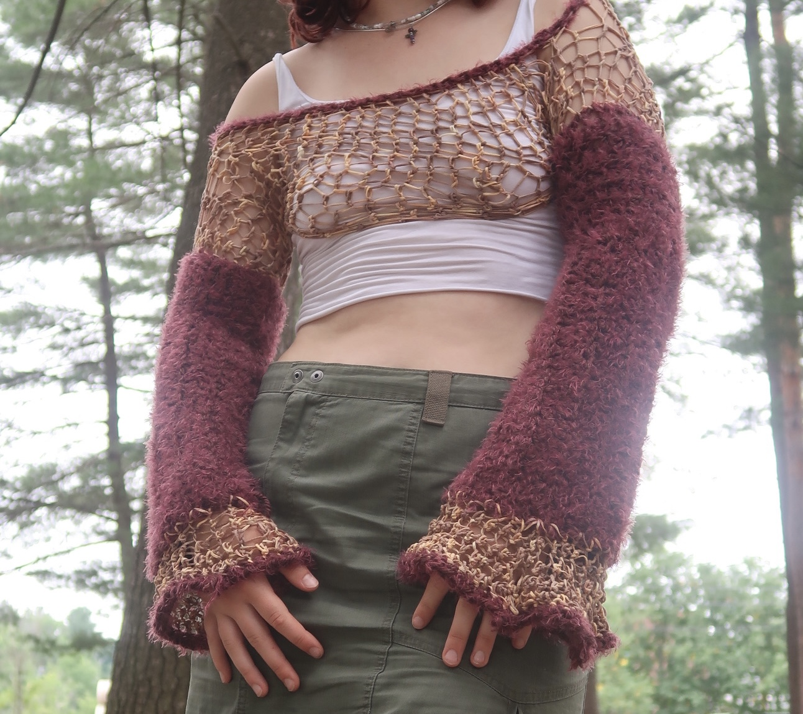

I began learning how to crochet in 2022, and my obsession for the medium resulted in very quick improvement and a large quantity of work. I still, to this day, don’t know how to read a crochet pattern, all the work you see was freehand. The cumulation of my experiments is a small body of Fungi-inspired fashion items. I have other various items on my instagram, Girlboss Grannies.



Oxidized spore top, bamboo mushroom arm warmers
Moss set
Turkey tail sleeves